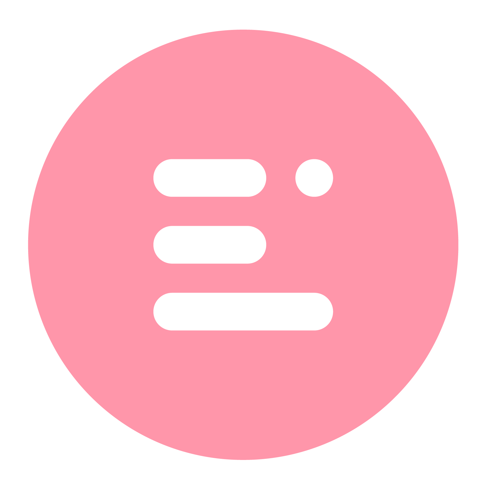

הכירו את Elevation Hub
כל מה שתצטרכו לאורך הקורס, במקום אחד.
היכרות קצרה עם האזורים שילוו אתכם לאורך הדרךברוכים הבאים ל־Elevation Hub
בחרו כרטיסייה כדי לגלות מה תמצאו בכל אזור
בחרו אחת מהכרטיסיות למעלה כדי לקרוא עליה עוד.
בלמידה העצמית ובמפגשים החיים.
כל הדרך שלכם מתחילה כאן.
לומדים בקצב שלכם. מתקדמים ביחד.
איך הקורס מתנהל?
הקורס משלב בין למידה עצמית לבין מפגשים חיים. שני חלקי הלמידה משלימים זה את זה, והיחידות העצמיות הן חלק בלתי נפרד מהקורס.
עכשיו אתם מכירים את הדרך
איך ללמוד בצורה אפקטיבית?
כמה הרגלים קטנים שיעזרו לכם לאורך הדרך.
קבעו מראש זמן ביומן להשלמת כל יחידה.
התקדמו לפי סדר היחידות והמועדים שמופיעים בקורס.
אל תסתפקו בצפייה — בצעו גם את התרגולים ובדיקות ההבנה.
עצרו וחזרו על חלקים שלא היו ברורים.
מוכנים להתחיל.
למידה עצמית לא אומרת שאתם לומדים לבד.
סוכן ה־AI, המרצה וצוות התוכנית כאן כדי לתמוך בכם לאורך הדרך.
המשיכו ליחידה הראשונה.